第 2 章 一般三角形#
Chapter 2 General Triangles
In Section 1.3 we saw how to solve a right triangle: given two sides, or one side and one acute angle, we could find the remaining sides and angles. In each case we were actually given three pieces of information, since we already knew one angle was \(90^\circ\).
For a general triangle, which may or may not have a right angle, we will again need three pieces of information. The four cases are:
Case 1: One side and two angles
Case 2: Two sides and one opposite angle
Case 3: Two sides and the angle between them
Case 4: Three sides
Note that if we were given all three angles we could not determine the sides uniquely; by similarity an infinite number of triangles have the same angles.
In this chapter we will learn how to solve a general triangle in all four of the above cases. Though the methods described will work for right triangles, they are mostly used to solve oblique triangles, that is, triangles which do not have a right angle. There are two types of oblique triangles: an acute triangle has all acute angles, and an obtuse triangle has one obtuse angle.
As we will see, Cases 1 and 2 can be solved using the law of sines, Case 3 can be solved using either the law of cosines or the law of tangents, and Case 4 can be solved using the law of cosines.
正弦定理#
The Law of Sines
Note that by taking reciprocals, equation (2.1) can be written as
and it can also be written as a collection of three equations:
Another way of stating the Law of Sines is: The sides of a triangle are proportional to the sines of their opposite angles.
To prove the Law of Sines, let \(\triangle ABC\) be an oblique triangle. Then \(\triangle ABC\) can be acute, as in Figure 2.1.1 (a), or it can be obtuse, as in Figure 2.1.1 (b). In each case, draw the altitude [1] from the vertex at $C$ to the side \(\overline{AB}\). In Figure 2.1.1 (a) the altitude lies inside the triangle, while in Figure 2.1.1 (b) the altitude lies outside the triangle.
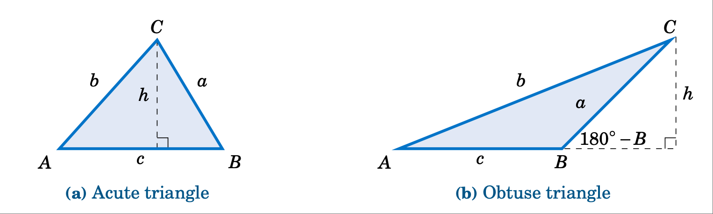
Figure 2.1.1 Proof of the Law of Sines for an oblique triangle \(\triangle ABC\)#
Let $h$ be the height of the altitude. For each triangle in Figure 2.1.1, we see that
and
(in Figure 2.1.1 <fig:lawsines>`(b), :math:frac{h}{a} = sin;(180^circ - B) = sin;B` by formula (1.19) in Section 1.5). Thus, solving for $h$ in equation (2.5) and substituting that into equation (2.4) gives
and so putting $a$ and $A$ on the left side and $b$ and $B$ on the right side, we get
By a similar argument, drawing the altitude from $A$ to \(\overline{BC}\) gives
so putting the last two equations together proves the theorem. [qed]
Note that we did not prove the Law of Sines for right triangles, since it turns out (see Exercise 12) to be trivially true for that case.
Example 2.1
{kind=link}
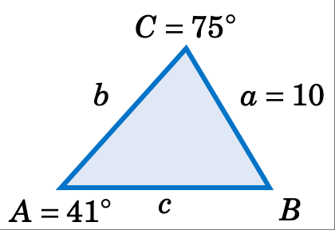
Case 1: One side and two angles.
Solve the triangle \(\triangle ABC\) given $a = 10$, \(A = 41^\circ\), and \(C = 75^\circ\).
Solution: We can find the third angle by subtracting the other two angles from \(180^\circ\), then use the law of sines to find the two unknown sides. In this example we need to find $B$, $b$, and $c$. First, we see that
So by the Law of Sines we have
and
Example 2.2
{kind=link}
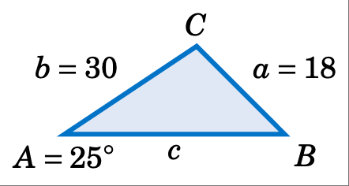
Case 2: Two sides and one opposite angle.
Solve the triangle \(\triangle ABC\) given a = 18, \(A = 25^\circ\), and b = 30.
Solution: In this example we know the side $a$ and its opposite angle $A$, and we know the side $b$. We can use the Law of Sines to find the other opposite angle $B$, then find the third angle $C$ by subtracting $A$ and $B$ from $180^circ$, then use the law of sines to find the third side $c$. By the Law of Sines, we have
Using the \(\boxed{\sin^{-1}}\) button on a calculator gives \(B = 44.8^\circ\). However, recall from Section 1.5 that \(\sin\;(180^\circ - B) = \sin\;B\). So there is a second possible solution for $B$, namely \(180^\circ - 44.8^\circ = 135.2^\circ\). Thus, we have to solve twice for $C$ and $c$ : once for \(B = 44.8^\circ\) and once for \(B = 135.2^\circ\):
Hence, \(\boxed{B = 44.8^\circ, C = 110.2^\circ, c = 40}\) and \(\boxed{B = 135.2^\circ, C = 19.8^\circ, c = 14.4}\) are the two possible sets of solutions. This means that there are two possible triangles, as shown in Figure 2.1.2.
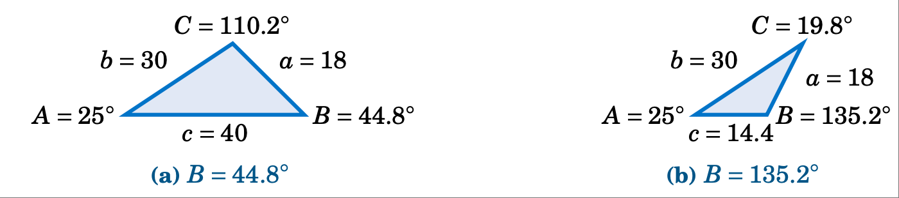
Figure 2.1.2 Two possible solutions#
In Example 2.2 we saw what is known as the ambiguous case. That is, there may be more than one solution. It is also possible for there to be exactly one solution or no solution at all.
Example 2.3
Case 2: Two sides and one opposite angle.
Solve the triangle \(\triangle ABC\) given $a = 5$, \(A = 30^\circ\), and $b = 12$.
Solution: By the Law of Sines, we have
which is impossible since \(\mid \sin B \mid \le 1\) for any angle $B$. Thus, there is [no solution].
There is a way to determine how many solutions a triangle has in Case 2. For a triangle \(\triangle ABC\), suppose that we know the sides $a$ and $b$ and the angle $A$. Draw the angle $A$ and the side $b$, and imagine that the side $a$ is attached at the vertex at $C$ so that it can “swing” freely, as indicated by the dashed arc in Figure 2.1.3 below.
{kind=link}
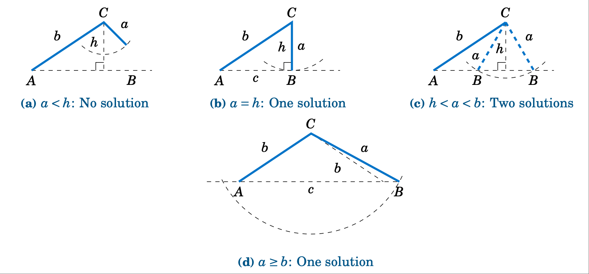
Figure 2.1.3 The ambiguous case when $A$ is acute#
If $A$ is acute, then the altitude from $C$ to \(\overline{AB}\) has height \(h = b\;\sin\;A\). As we can see in Figure 2.1.3 (a)-(c), there is no solution when $a < h$ (this was the case in Example 2.3); there is exactly one solution - namely, a right triangle - when $a = h$; and there are two solutions when $h < a < b$ (as was the case in Example 2.2). When \(a \ge b\) there is only one solution, even though it appears from Figure 2.1.3 (d) that there may be two solutions, since the dashed arc intersects the horizontal line at two points. However, the point of intersection to the left of $A$ in Figure 2.1.3 (d) can not be used to determine $B$, since that would make $A$ an obtuse angle, and we assumed that $A$ was acute.
If $A$ is not acute (i.e. $A$ is obtuse or a right angle), then the situation is simpler: there is no solution if \(a \le b\), and there is exactly one solution if \(a > b\) (see Figure 2.1.4).
{kind=link}
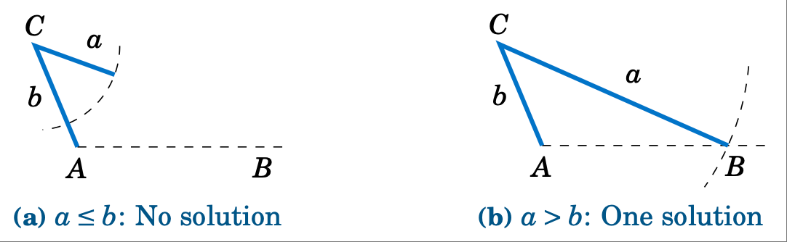
Figure 2.1.4 The ambiguous case when \(A \ge 90^\circ\)#
Table 2.1 summarizes the ambiguous case of solving \(\triangle ABC\) when given $a$, $A$, and $b$. Of course, the letters can be interchanged, e.g. replace $a$ and $A$ by $c$ and $C$, etc.
Table 2.1 Summary of the ambiguous case
\(0^\circ < A < 90^\circ\) |
\(90^\circ \le A < 180^\circ\) |
|---|---|
|
|
There is an interesting geometric consequence of the Law of Sines. Recall from Section 1.1 that in a right triangle the hypotenuse is the largest side. Since a right angle is the largest angle in a right triangle, this means that the largest side is opposite the largest angle. What the Law of Sines does is generalize this to any triangle:
备注
In any triangle, the largest side is opposite the largest angle.
To prove this, let $C$ be the largest angle in a triangle \(\triangle ABC\). If \(C = 90^\circ\) then we already know that its opposite side $c$ is the largest side. So we just need to prove the result for when $C$ is acute and for when $C$ is obtuse. In both cases, we have \(A \le C\) and \(B \le C\). We will first show that \(\sin\;A \le \sin\;C\) and \(\sin\;B \le \sin\;C\).
{kind=link}
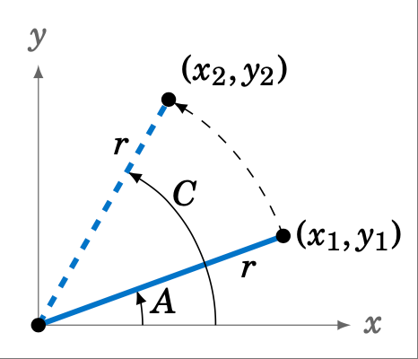
Figure 2.1.5#
If $C$ is acute, then $A$ and $B$ are also acute. Since \(A \le C\), imagine that $A$ is in standard position in the $xy$-coordinate plane and that we rotate the terminal side of $A$ counterclockwise to the terminal side of the larger angle $C$, as in Figure 2.1.5. If we pick points \((x_{1},y_{1})\) and \((x_{2},y_{2})\) on the terminal sides of $A$ and $C$, respectively, so that their distance to the origin is the same number $r$, then we see from the picture that $y_{1} le y_{2}$, and hence
By a similar argument, \(B \le C\) implies that \(\sin\;B \le \sin\;C\). Thus, \(\sin\;A \le \sin\;C\) and \(\sin\;B \le \sin\;C\) when $C$ is acute. We will now show that these inequalities hold when $C$ is obtuse.
If $C$ is obtuse, then $180^circ - C$ is acute, as are $A$ and $B$. If \(A > 180^\circ - C\) then \(A + C > 180^\circ\), which is impossible. Thus, we must have \(A \le 180^\circ - C\). Likewise, \(B \le 180^\circ - C\). So by what we showed above for acute angles, we know that \(\sin\;A \le \sin\;(180^\circ - C)\) and \(\sin\;B \le \sin\;(180^\circ - C)\). But we know from Section 1.5 that \(\sin\;C = \sin\;(180^\circ - C)\). Hence, \(\sin\;A \le \sin\;C\) and \(\sin\;B \le \sin\;C\) when $C$ is obtuse.
Thus, \(\sin\;A \le \sin\;C\) if $C$ is acute or obtuse, so by the Law of Sines we have
By a similar argument, \(b \le c\). Thus, \(a \le c\) and \(b \le c\), i.e. $c$ is the largest side. [qed]
练习#
Exercises
For Exercises 1-9, solve the triangle \(\triangle ABC\).
\(a = 10, A = 35^\circ, B = 25^\circ\)
\(b = 40, B = 75^\circ, c = 35\)
\(A = 40^\circ, B = 45^\circ, c = 15\)
\(a = 5, A = 42^\circ, b = 7\)
\(a = 40, A = 25^\circ, c = 30\)
\(a = 5, A = 47^\circ, b = 9\)
\(a = 12, A = 94^\circ, b = 15\)
\(a = 15, A = 94^\circ, b = 12\)
\(a = 22, A = 50^\circ, c = 27\)
Draw a circle with a radius of $2$ inches and inscribe a triangle inside the circle. Use a ruler and a protractor to measure the sides $a$, $b$, $c$ and the angles $A$, $B$, $C$ of the triangle. The Law of Sines says that the ratios \(\frac{a}{\sin\;A}\), \(\frac{b}{\sin\;B}\), \(\frac{c}{\sin\;C}\) are equal. Verify this for your triangle. What relation does that common ratio have to the diameter of your circle?
An observer on the ground measures an angle of inclination of \(30^\circ\) to an approaching airplane, and $10$ seconds later measures an angle of inclination of \(55^\circ\). If the airplane is flying at a constant speed and at a steady altitude of $6000$ ft in a straight line directly over the observer, find the speed of the airplane in miles per hour. (Note: $1$ mile = $5280$ ft)
{kind=link}
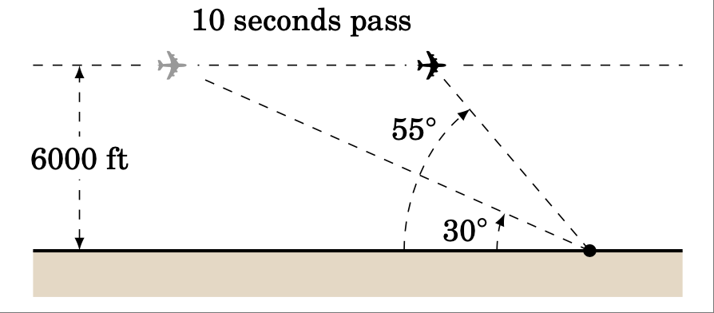
Prove the Law of Sines for right triangles. (Hint: One of the angles is known.)
For a triangle \(\triangle ABC\), show that \(~\dfrac{a \pm b}{c} ~=~ \dfrac{\sin\;A \;\pm\; \sin\;B}{\sin\;C}\,\).
For a triangle \(\triangle ABC\), show that \(~\dfrac{a}{c} ~=~\dfrac{\sin\;(B+C)}{\sin\;C}\,\).
One diagonal of a parallelogram is 17 cm long and makes angles of \(36^\circ \text{ and } 15^\circ\) with the sides. Find the lengths of the sides.
Explain why in Case 1 (one side and two angles) there is always exactly one solution.
余弦定理#
The Law of Cosines
We will now discuss how to solve a triangle in Case 3: two sides and the angle between them. First, let us see what happens when we try to use the Law of Sines for this case.
Example 2.4
{kind=link}
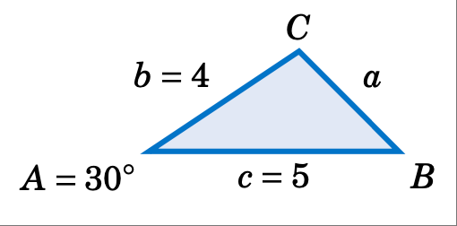
Case 3: Two sides and the angle between them.
Solve the triangle \(\triangle ABC\) given \(A = 30^\circ\), $b = 4$, and $c = 5$.
Solution: Using the Law of Sines, we have
where each of the equations has two unknown parts, making the problem impossible to solve. For example, to solve for $a$ we could use the equation \(\frac{4}{\sin\;B} = \frac{5}{\sin\;C}\) to solve for \(\sin\;B\) in terms of \(\sin\;C\) and substitute that into the equation \(\frac{a}{\sin\;30^\circ} = \frac{4}{\sin\;B}\). But that would just result in the equation \(\frac{a}{\sin\;30^\circ} = \frac{5}{\sin\;C}\), which we already knew and which still has two unknowns!
Thus, this problem can not be solved using the Law of Sines.
To solve the triangle in the above example, we can use the Law of Cosines:
To prove the Law of Cosines, let \(\triangle ABC\) be an oblique triangle. Then \(\triangle ABC\) can be acute, as in Figure 2.2.1 (a), or it can be obtuse, as in Figure 2.2.1 (b). In each case, draw the altitude from the vertex at $C$ to the side \(\overline{AB}\). In Figure 2.2.1 (a) the altitude divides \(\overline{AB}\) into two line segments with lengths $x$ and $c-x$, while in Figure 2.2.1 (b) the altitude extends the side \(\overline{AB}\) by a distance $x$. Let $h$ be the height of the altitude.
{kind=link}
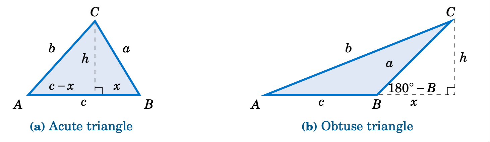
Proof of the Law of Cosines for an oblique triangle \(\triangle ABC\)#
For each triangle in Figure 2.2.1, we see by the Pythagorean Theorem that
and likewise for the acute triangle in Figure 2.2.1 (a) we see that
Thus, substituting the expression for $h^2$ in equation (11) into equation (12) gives
But we see from Figure 2.2.1 (a) that \(x = a\;\cos\;B\), so
And for the obtuse triangle in Figure 2.2.1 (b) we see that
Thus, substituting the expression for $h^2$ in equation (2.12) into equation (14) gives
But we see from Figure 2.2.1 (a) that \(x = a\;\cos\;(180^\circ - B)\), and we know from Section 1.5 that \(\cos\;(180^\circ - B) = -\cos\;B\). Thus, \(x = -a\;\cos\;B\) and so
So for both acute and obtuse triangles we have proved formula (9) in the Law of Cosines. Notice that the proof was for $B$ acute and obtuse. By similar arguments for $A$ and $C$ we get the other two formulas. [qed]
Note that we did not prove the Law of Cosines for right triangles, since it turns out (see Exercise 15) that all three formulas reduce to the Pythagorean Theorem for that case. The Law of Cosines can be viewed as a generalization of the Pythagorean Theorem.
Also, notice that it suffices to remember just one of the three formulas (8) - (10), since the other two can be obtained by “cycling” through the letters $a$, $b$, and $c$. That is, replace $a$ by $b$, replace $b$ by $c$, and replace $c$ by $a$ (likewise for the capital letters). One cycle will give you the second formula, and another cycle will give you the third.
The angle between two sides of a triangle is often called the included angle. Notice in the Law of Cosines that if two sides and their included angle are known (e.g. $b$, $c$, and $A$), then we have a formula for the square of the third side.
We will now solve the triangle from Example 2.4.
Example 2.5
{kind=link}
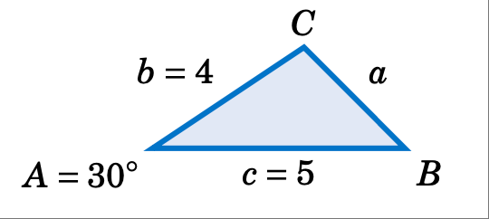
Case 3: Two sides and the angle between them.
Solve the triangle \(\triangle ABC\) given \(A = 30^\circ\), $b = 4$, and $c = 5$.
Solution: We will use the Law of Cosines to find $a$, use it again to find $B$, then use \(C = 180^\circ - A - B\). First, we have
Now we use the formula for $b^2$ to find $B$:
Thus, \(C = 180^\circ - A - B = 180^\circ - 30^\circ - 52.5^\circ \Rightarrow \boxed{C = 97.5^\circ}\;\).
Notice in Example 2.5 that there was only one solution. For Case 3 this will always be true: when given two sides and their included angle, the triangle will have exactly one solution. The reason is simple: when joining two line segments at a common vertex to form an angle, there is exactly one way to connect their free endpoints with a third line segment, regardless of the size of the angle.
You may be wondering why we used the Law of Cosines a second time in Example 2.5, to find the angle $B$. Why not use the Law of Sines, which has a simpler formula? The reason is that using the cosine function eliminates any ambiguity: if the cosine is positive then the angle is acute, and if the cosine is negative then the angle is obtuse. This is in contrast to using the sine function; as we saw in Section 2.1, both an acute angle and its obtuse supplement have the same positive sine.
To see this, suppose that we had used the Law of Sines to find $B$ in Example 2.5:
How would we know which answer is correct? We could not immediately rule out \(B = 127.5^\circ\) as too large, since it would make \(A + B = 157.5^\circ < 180^\circ\) and so \(C = 22.5^\circ\), which seems like it could be a valid solution. However, this solution is impossible. Why? Because the largest side in the triangle is $c = 5$, which (as we learned in Section 2.1) means that $C$ has to be the largest angle. But \(C = 22.5^\circ\) would not be the largest angle in this solution, and hence we have a contradiction.
It remains to solve a triangle in Case 4, i.e. given three sides. We will now see how to use the Law of Cosines for that case.
Example 2.6
{kind=link}
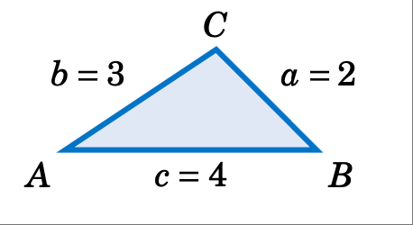
Case 4: Three sides.
Solve the triangle \(\triangle ABC\) given $a = 2$, $b = 3$, and $c = 4$.
Solution: We will use the Law of Cosines to find $B$ and $C$, then use \(A = 180^\circ - B - C\). First, we use the formula for $b^2$ to find $B$:
Now we use the formula for $c^2$ to find $C$:
Thus, \(A = 180^\circ - B - C = 180^\circ - 46.6^\circ - 104.5^\circ \Rightarrow \boxed{A = 28.9^\circ}\;\).
It may seem that there is always a solution in Case 4 (given all three sides), but that is not true, as the following example shows.
Example 2.7
{kind=link}
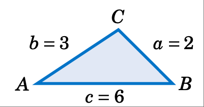
Case 4: Three sides.
Solve the triangle \(\triangle ABC\) given $a = 2$, $b = 3$, and $c = 6$.
Solution: If we blindly try to use the Law of Cosines to find $A$, we get
which is impossible since \(\mid \cos\;A \mid \le 1\). Thus, there is \(\boxed{\text{no solution}}\).
{kind=link}
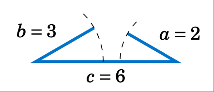
We could have saved ourselves some effort by recognizing that the length of one of the sides ($c=6$) is greater than the sums of the lengths of the remaining sides ($a=2$ and $b=3$), which (as the picture on the right shows) is impossible in a triangle.
The Law of Cosines can also be used to solve triangles in Case 2 (two sides and one opposite angle), though it is less commonly used for that purpose than the Law of Sines. The following example gives an idea of how to do this.
Example 2.8
Case 2: Two sides and one opposite angle.
Solve the triangle \(\triangle ABC\) given $a = 18$, \(A = 25^\circ\), and $b = 30$.
Solution: In Example 2.2 from Section 2.1 we used the Law of Sines to show that there are two sets of solutions for this triangle: \(B = 44.8^\circ\), \(C = 110.2^\circ\), $c = 40$ and \(B = 135.2^\circ\), \(C = 19.8^\circ\), $c = 14.4$. To solve this using the Law of Cosines, first find $c$ by using the formula for $a^2$:
which is a quadratic equation in $c$, so we know that it can have either zero, one, or two real roots (corresponding to the number of solutions in Case 2). By the quadratic formula, we have
Note that these are the same values for $c$ that we found before. For $c=40$ we get
which is close to what we found before (the small difference being due to different rounding). The other solution set can be obtained similarly.
Like the Law of Sines, the Law of Cosines can be used to prove some geometric facts, as in the following example.
Example 2.9
{kind=link}
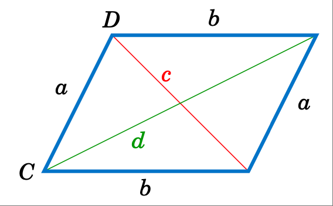
Use the Law of Cosines to prove that the sum of the squares of the diagonals of any parallelogram equals the sum of the squares of the sides.
Solution: Let $a$ and $b$ be the lengths of the sides, and let the diagonals opposite the angles $C$ and $D$ have lengths $c$ and $d$, respectively, as in Figure 2.2.2. Then we need to show that
By the Law of Cosines, we know that
By properties of parallelograms, we know that \(D = 180^\circ - C\), so
since \(\;\cos\;(180^\circ - C) = -\cos\;C\). Thus,
[QED]
练习#
Exercises
For Exercises 1-6, solve the triangle \(\triangle ABC\).
\(A = 60^\circ, b = 8, c = 12\)
\(A = 30^\circ, b = 4, c = 6\)
\(a = 7, B = 60^\circ, c = 9\)
\(a = 7, b = 3, c = 9\)
\(a = 6, b = 4, c = 1\)
\(a = 11, b = 13, c = 16\)
The diagonals of a parallelogram intersect at a \(42^\circ\) angle and have lengths of $12$ and $7$ cm. Find the lengths of the sides of the parallelogram. (Hint: The diagonals bisect each other.)
Two trains leave the same train station at the same time, moving along straight tracks that form a \(35^\circ\) angle. If one train travels at an average speed of $100$ mi/hr and the other at an average speed of $90$ mi/hr, how far apart are the trains after half an hour?
Three circles with radii of $4$, $5$, and $6$ cm, respectively, are tangent to each other externally. Find the angles of the triangle whose vertexes are the centers of the circles.
Find the length $x$ of the diagonal of the quadrilateral in Figure 2.2.3 below.
{kind=link}
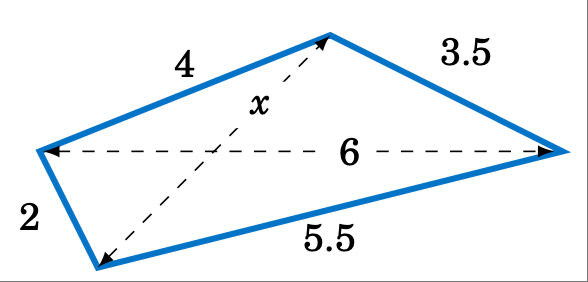
Figure 2.2.3 Exercise 10#
{kind=link}
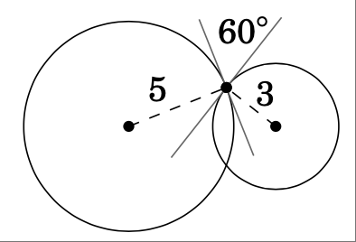
Figure 2.2.3 Exercise 11#
Two circles of radii $5$ and $3$ cm, respectively, intersect at two points. At either point of intersection, the tangent lines to the circles form a \(60^\circ\) angle, as in Figure 2.2.4 above. Find the distance between the centers of the circles.
Use the Law of Cosines to show that for any triangle \(\triangle ABC\), \(c^2 < a^2 + b^2\) if $C$ is acute, c^2 > a^2 + b^2 if $C$ is obtuse, and \(c^2 = a^2 + b^2\) if $C$ is a right angle.
Show that for any triangle \(\triangle ABC\),
\[\frac{\cos\;A}{a} ~+~ \frac{\cos\;B}{b} ~+~ \frac{\cos\;C}{c} ~=~ \frac{a^2 + b^2 + c^2}{2abc}~.\]Show that for any triangle \(\triangle ABC\),
\[\cos\;A ~+~ \cos\;B ~+~ \cos\;C ~=~ \frac{a^2 \;(b+c-a)~+~ b^2 \;(a+c-b)~+~ c^2 \;(a+b-c)}{2abc}~.\]What do the terms in parentheses represent geometrically? Use your answer to explain why \(\;\cos\;A ~+~ \cos\;B ~+~ \cos\;C ~>~0\,\) for any triangle, even if one of the cosines is negative. [2]
Prove the Law of Cosines (i.e. formulas (8)-(10) for right triangles.
Recall from elementary geometry that a emph{median} of a triangle is a line segment from any vertex to the midpoint of the opposite side. Show that the sum of the squares of the three medians of a triangle is sfrac{3}{4} the sum of the squares of the sides.
The Dutch astronomer and mathematician Willebrord Snell (1580-1626) wrote the Law of Cosines as
\[\frac{2ab}{c^2 \;-\; (a - b)^2} ~=~ \frac{1}{1 \;-\; \cos\;C}\]in his trigonometry text emph{Doctrina triangulorum} (published a year after his death). Show that this formula is equivalent to formula (ref{eqn:lawcosinesc}) in our statement of the Law of Cosines.
Suppose that a satellite in space, an earth station, and the center of the earth all lie in the same plane. Let $r_e$ be the radius of the earth, let $r_s$ be the distance from the center of the earth to the satellite (called the orbital radius of the satellite), and let $d$ be the distance from the earth station to the satellite. Let $E$ be the angle of elevation from the earth station to the satellite, and let \(\gamma\) and \(\psi\) be the angles shown in Figure 2.2.5.
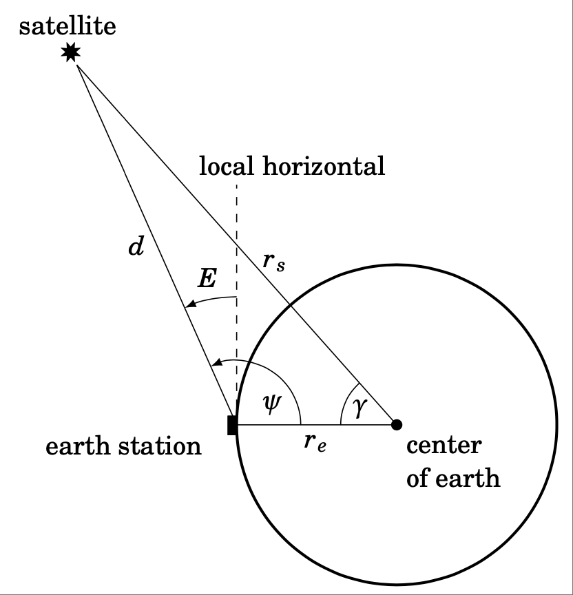
Figure 2.2.5#
Use the Law of Cosines to show that
\[d ~=~ r_s \,\sqrt{1 \;+\; \left( \frac{r_e}{r_s} \right)^2 \;-\; 2\,\left( \frac{r_e}{r_s} \right) \,\cos\;\gamma} ~~,\]and then use \(E=\psi-90^\circ\) and the Law of Sines to show that
\[\cos\;E ~=~ \dfrac{\sin\;\gamma}{\sqrt{1 \;+\; \left( \dfrac{r_e}{r_s} \right)^2 \;-\; 2\,\left( \dfrac{r_e}{r_s} \right) \,\cos\;\gamma}} ~.\]Note: This formula allows the angle of elevation $E$ to be calculated from the coordinates of the earth station and the subsatellite point (where the line from the satellite to the center of the earth crosses the surface of the earth). [3]
正切定理#
The Law of Tangents
We have shown how to solve a triangle in all four cases discussed at the beginning of this chapter. An alternative to the Law of Cosines for Case 3 (two sides and the included angle) is the Law of Tangents:
Theorem 2.3. Law of Tangents: If a triangle has sides of lengths $a$, $b$, and $c$ opposite the angles $A$, $B$, and $C$, respectively, then
Note that since \(\tan\;(-\theta) = -\tan\;\theta\) for any angle \(\theta\), we can switch the order of the letters in each of the above formulas. For example, we can rewrite formula (16) as
and similarly for the other formulas. If $a > b$, then it is usually more convenient to use formula (16), while formula (19) is more convenient when $b > a$.
Example 2.10
{kind=link}
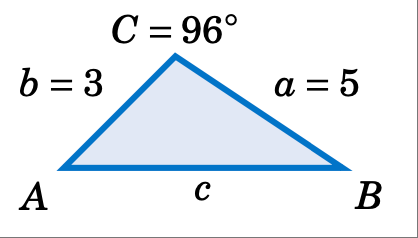
Case 3: Two sides and the included angle.
Solve the triangle \(\triangle ABC\) given $a =5$, $b = 3$, and \(C = 96^\circ\).
Solution: \(A + B + C = 180^\circ\), so \(A + B = 180^\circ - C = 180^\circ - 96^\circ = 84^\circ\). Thus, by the Law of Tangents,
We now have two equations involving $A$ and $B$, which we can solve by adding the equations:
We can find the remaining side $c$ by using the Law of Sines:
Note that in any triangle \(\triangle ABC\), if $a = b$ then $A = B$ (why?), and so both sides of formula (16) would be $0$ (since \(\tan 0^\circ = 0\)). This means that the Law of Tangents is of no help in Case 3 when the two known sides are equal. For this reason, and perhaps also because of the somewhat unusual way in which it is used, the Law of Tangents seems to have fallen out of favor in trigonometry books lately. It does not seem to have any advantages over the Law of Cosines, which works even when the sides are equal, requires slightly fewer steps, and is perhaps more straightforward. [4]
Related to the Law of Tangents are Mollweide’s equations: [5]
Mollweide’s equations: For any triangle \(\triangle ABC\),
Note that all six parts of a triangle appear in both of Mollweide’s equations. For this reason, either equation can be used to check a solution of a triangle. If both sides of the equation agree (more or less), then we know that the solution is correct.
Example 2.11
Use one of Mollweide’s equations to check the solution of the triangle from Example 2.10.
Solution: Recall that the full solution was $a=5$, $b=3$, $c=6.09$, \(A=54.7^\circ\), \(B=29.3^\circ\), and \(C=96^\circ\). We will check this with equation (20) :
The small difference (\(\approx 0.0001\)) is due to rounding errors from the original solution, so we can conclude that both sides of the equation agree, and hence the solution is correct.
Example 2.12
Can a triangle have the parts $a=6$, $b=7$, $c=9$, \(A=55^\circ\), \(B=60^\circ\), and \(C=65^\circ\;\)?
Solution: Before using Mollweide’s equations, simpler checks are that the angles add up to \(180^\circ\) and that the smallest and largest sides are opposite the smallest and largest angles, respectively. In this case all those conditions hold. So check with Mollweide’s equation (21) :
Here the difference is far too large, so we conclude that there is no triangle with these parts.
We will prove the Law of Tangents and Mollweide’s equations in Chapter 3, where we will be able to supply brief analytic proofs. [6]
练习#
Exercises
For Exercises 1-3, use the Law of Tangents to solve the triangle \(\triangle ABC\).
$a = 12$, $b = 8$, \(C = 60^\circ\)
\(A = 30^\circ\), $b = 4$, $c = 6$
$a = 7$, \(B = 60^\circ\), $c = 9$
For Exercises 4-6, check if it is possible for a triangle to have the given parts.
$a=5$, $b=7$, $c=10$, \(A=27.7^\circ\), \(B=40.5^\circ\), \(C=111.8^\circ\)
$a=3$, $b=7$, $c=9$, \(A=19.2^\circ\), \(B=68.2^\circ\), \(C=92.6^\circ\)
$a=6$, $b=9$, $c=9$, \(A=39^\circ\), \(B=70.5^\circ\), \(C=70.5^\circ\)
Let \(\triangle ABC\) be a right triangle with \(C=90^\circ\). Show that \(\;\tan\;\frac{1}{2}(A-B) =\frac{a-b}{a+b}\,\).
For any triangle \(\triangle ABC\), show that \(\;\tan\;\frac{1}{2}(A-B) = \frac{a-b}{a+b}\;\cot\;\frac{1}{2}C\,\).
For any triangle \(\triangle ABC\), show that \(\;\tan\;A = \dfrac{a\;\sin\;B}{c - a\;\cos\;B}\,\). (Hint: Draw the altitude from the vertex $C$ to \(\overline{AB}\).) Notice that this formula provides another way of solving a triangle in Case 3 (two sides and the included angle).
For any triangle \(\triangle ABC\), show that \(\;c = b\;\cos\;A + a\;\cos\;B\,\). This is another check of a triangle.
If \(\,b\;\cos\;A = a\;\cos\;B\,\), show that the triangle \(\triangle ABC\) is isosceles.
Let $ABCD$ be a quadrilateral which completely contains its two diagonals. The quadrilateral has eight parts: four sides and four angles. What is the smallest number of parts that you would need to know to solve the quadrilateral? Explain your answer.
三角形的面积#
The Area of a Triangle
In elementary geometry you learned that the area of a triangle is one-half the base times the height. We will now use that, combined with some trigonometry, to derive more formulas for the area when given various parts of the triangle.
Case 1: Two sides and the included angle.
Suppose that we have a triangle \(\triangle ABC\), in which $A$ can be either acute, a right angle, or obtuse, as in Figure 2.4.1. Assume that $A$, $b$, and $c$ are known.
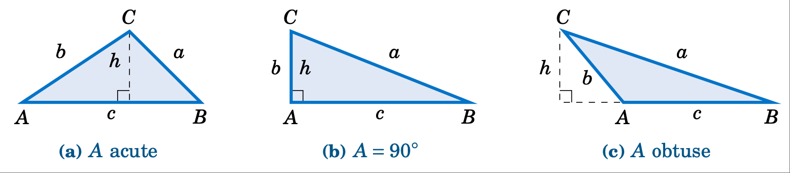
Figure 2.4.1 Area of \(\triangle ABC\)#
In each case we draw an altitude of height $h$ from the vertex at $C$ to \(\overline{AB}\), so that the area (which we will denote by the letter $K$) is given by \(K = \frac{1}{2}hc\). But we see that \(h = b\;\sin\;A\) in each of the triangles (since \(\;h=b\) and \(\sin\;A = \sin\;90^\circ = 1\) in Figure 2.4.1 (b), and \(\;h = b\;\sin\;(180^\circ - A) = b\;\sin\;A\) in Figure 2.4.1 (c)). We thus get the following formula:
The above formula for the area of \(\triangle ABC\) is in terms of the known parts $A$, $b$, and $c$. Similar arguments for the angles $B$ and $C$ give us:
Notice that the height $h$ does not appear explicitly in these formulas, although it is implicitly there. These formulas have the advantage of being in terms of parts of the triangle, without having to find $h$ separately.
Example 2.13
{kind=link}
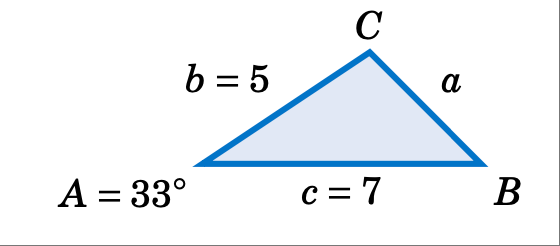
Find the area of the triangle \(\triangle ABC\) given \(A = 33^\circ\), $b = 5$, and $c = 7$.
Solution: Using formula (22), the area $K$ is given by:
Case 2: Three angles and any side.
Suppose that we have a triangle \(\triangle ABC\) in which one side, say, $a$, and all three angles are known. [7] By the Law of Sines we know that
so substituting this into formula (23) we get:
Similar arguments for the sides $b$ and $c$ give us:
Example 2.14
{kind=link}
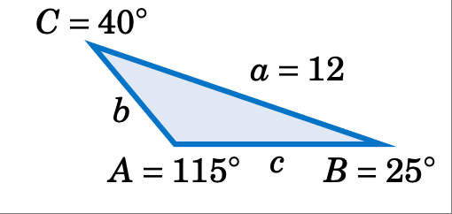
Find the area of the triangle \(\triangle ABC\) given \(A = 115^\circ\), \(B=25^\circ\), \(C=40^\circ\), and $a = 12$.
Solution: Using formula (25), the area $K$ is given by:
Case 3: Three sides. Suppose that we have a triangle \(\triangle ABC\) in which all three sides are known. Then Heron’s formula [8] gives us the area:
To prove this, first remember that the area $K$ is one-half the base times the height. Using $c$ as the base and the altitude $h$ as the height, as before in Figure 2.4.1, we have \(K = \frac{1}{2}hc\). Squaring both sides gives us
In Figure 2.4.2, let $D$ be the point where the altitude touches \(\overline{AB}\) (or its extension).
{kind=link}
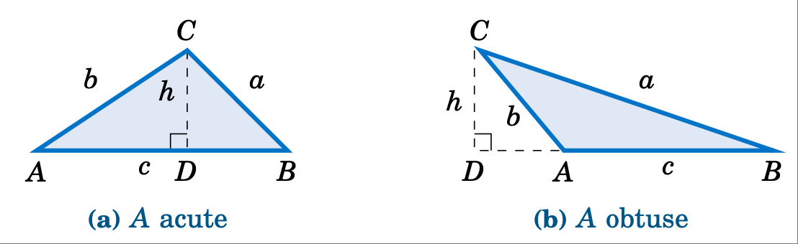
Figure 2.4.2 Proof of Heron’s formula#
By the Pythagorean Theorem, we see that \(\;h^2 = b^2 - (AD)^2\). In Figure 2.4.2 (a), we see that $;AD = b;cos;A$. And in Figure 2.4.2 (b) we see that \(\;AD = b\;\cos\;(180^\circ - A) = -b\cos\;A\). Hence, in either case we have \(\;(AD)^2 = b^2 \;(\cos\;A)^2\), and so
(Note that the above equation also holds when \(A=90^\circ\) since \(\cos\;90^\circ =0\) and $h=b$). Thus, substituting equation (30) into equation (29), we have
By the Law of Cosines we know that
and similarly
Thus, substituting these expressions into equation (31), we have
and since we defined \(s = \frac{1}{2}\,(a+b+c)\), we see that
so upon taking square roots we get
[qed]
Example 2.15
{kind=link}
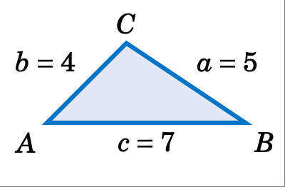
Find the area of the triangle \(\triangle ABC\) given $a=5$, $b=4$, and $c = 7$.
Solution: Using Heron’s formula with \(s = \frac{1}{2}\,(a+b+c) = \frac{1}{2}\,(5+4+7) = 8\), the area $K$ is given by:
Heron’s formula is useful for theoretical purposes (e.g. in deriving other formulas). However, it is not well-suited for calculator use, exhibiting what is called numerical instability for “extreme” triangles, as in the following example.
Example 2.16
Find the area of the triangle \(\triangle ABC\) given $a=1000000$, $b=999999.9999979$, and $c = 0.0000029$.
Solution: To use Heron’s formula, we need to calculate \(s = \frac{1}{2}\,(a+b+c)\). Notice that the actual value of $a+b+c$ is $2000000.0000008$, which has $14$ digits. Most calculators can store $12$-$14$ digits internally (even if they display less), and hence may round off that value of $a+b+c$ to $2000000$. When we then divide that rounded value for $a+b+c$ by $2$ to get $s$, some calculators (e.g. the TI-83 Plus) will give a rounded down value of $1000000$.
This is a problem because $a=1000000$, and so we would get $s-a=0$, causing Heron’s formula to give us an area of $0$ for the triangle! And this is indeed the incorrect answer that the TI-83 Plus returns. Other calculators may give some other inaccurate answer, depending on how they store values internally. The actual area - accurate to $15$ decimal places - is $K = 0.99999999999895$, i.e. it is basically $1$.
The above example shows how problematic floating-point arithmetic can be. [9] Luckily there is a better formula [10] for the area of a triangle when the three sides are known:
For a triangle \(\triangle ABC\) with sides \(a \ge b \ge c\), the area is :
(32)#\[\text{Area} ~=~ K ~=~ \tfrac{1}{4}\,\sqrt{(a + (b+c))\,(c - (a-b))\,(c + (a-b))\,(a + (b-c))}\]
To use this formula, sort the names of the sides so that \(a \ge b \ge c\). Then perform the operations inside the square root in the exact order in which they appear in the formula, including the use of parentheses. Then take the square root and divide by $4$. For the triangle in Example 2.16, the above formula gives an answer of exactly $K = 1$ on the same TI-83 Plus calculator that failed with Heron’s formula. What is amazing about this formula is that it is just Heron’s formula rewritten! The use of parentheses is what forces the correct order of operations for numerical stability.
Another formula [11] for the area of a triangle given its three sides is given below:
For a triangle \(\triangle ABC\) with sides $a ge b ge c$, the area is:
(33)#\[\text{Area} ~=~ K ~=~ \tfrac{1}{2}\,\sqrt{a^2 c^2 ~-~ \left( \tfrac{a^2 + c^2 - b^2}{2} \right)^2}\]
For the triangle in Example 2.16, the above formula gives an answer of exactly $K = 1$ on the same TI-83 Plus calculator that failed with Heron’s formula.
练习#
Exercises
For Exercises 1-6, find the area of the triangle \(\triangle ABC\).
\(A = 70^\circ\), $b = 4$, $c = 12$
$a = 10$, \(B = 95^\circ\), $c = 35$
\(A = 10^\circ\), \(B = 48^\circ\), \(C = 122^\circ\), $c = 11$
\(A = 171^\circ\), \(B = 1^\circ\), \(C = 8^\circ\), $b = 2$
$a = 2$, $b = 3$, $c = 4$
$a = 5$, $b=6$, $c = 5$
Find the area of the quadrilateral in Figure 2.4.3 below.
{kind=link}
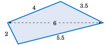
{kind=link}
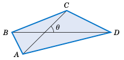
Let $ABCD$ be a quadrilateral which completely contains its two diagonals, as in Figure 2.4.4 above. Show that the area $K$ of $ABCD$ is equal to half the product of its diagonals and the sine of the angle they form, i.e. \(K = \frac{1}{2}\,AC\,\cdot\,BD\;\sin\;\theta\;\).
From formula (25) derive the following formula for the area of a triangle \(\triangle ABC\):
\[\text{Area} ~=~ K ~=~ \frac{a^2 \;\sin\;B \;\sin\;C}{2\;\sin\;(B+C)}\]Show that the triangle area formula
\[\text{Area} ~=~ K ~=~ \tfrac{1}{4}\,\sqrt{(a + (b+c))\,(c - (a-b))\,(c + (a-b))\,(a + (b-c))}\]is equivalent to Heron’s formula. (Hint: In Heron’s formula replace $s$ by \(\frac{1}{2}(a+b+c)\).)
外接圆与内切圆#
Circumscribed and Inscribed Circles
Recall from the Law of Sines that any triangle \(\triangle ABC\) has a common ratio of sides to sines of opposite angles, namely
This common ratio has a geometric meaning: it is the diameter (i.e. twice the radius) of the unique circle in which \(\triangle ABC\) can be inscribed, called the circumscribed circle of the triangle. Before proving this, we need to review some elementary geometry.
A central angle of a circle is an angle whose vertex is the center $O$ of the circle and whose sides (called radii are line segments from $O$ to two points on the circle. In Figure 2.5.1 (a), \(\angle\,O\) is a central angle and we say that it intercepts the arc \(\stackrel\frown{BC}\).
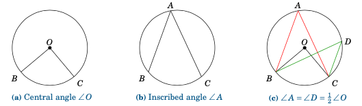
Figure 2.5.1 Types of angles in a circle#
An inscribed angle of a circle is an angle whose vertex is a point $A$ on the circle and whose sides are line segments (called chords) from $A$ to two other points on the circle. In Figure 2.5.1 (b), \(\angle\,A\) is an inscribed angle that intercepts the arc \(\stackrel\frown{BC}\). We state here without proof [12] a useful relation between inscribed and central angles:
Theorem 2.4. If an inscribed angle \(\angle\,A\) and a central angle \(\angle\,O\) intercept the same arc, then \(\angle\,A = \frac{1}{2}\,\angle\,O\,\). Thus, inscribed angles which intercept the same arc are equal.
Figure 2.5.1 (c) shows two inscribed angles, \(\angle\,A\) and \(\angle\,D\), which intercept the same arc \(\stackrel\frown{BC}\) as the central angle \(\angle\,O\), and hence \(\angle\,A = \angle\,D = \frac{1}{2}\,\angle\,O\) (so \(\;\angle\,O = 2\,\angle\,A = 2\,\angle\,D\,\)).
We will now prove our assertion about the common ratio in the Law of Sines:
Theorem 2.5. For any triangle \(\triangle ABC\), the radius $R$ of its circumscribed circle is given by:
(34)#\[2\,R ~=~ \frac{a}{\sin\;A} ~=~ \frac{b}{\sin\;B} ~=~ \frac{c}{\sin\;C}\]
(Note: For a circle of diameter $1$, this means \(a=\sin\;A\), \(b=\sin\;B\), and \(c=\sin\;C\).)
To prove this, let $O$ be the center of the circumscribed circle for a triangle \(\triangle ABC\). Then $O$ can be either inside, outside, or on the triangle, as in Figure 2.5.2 below. In the first two cases, draw a perpendicular line segment from $O$ to \(\overline{AB}\) at the point $D$.
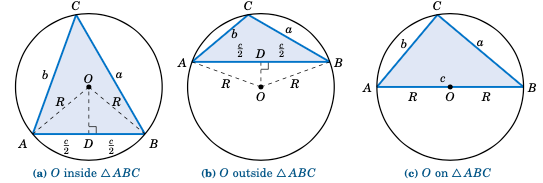
Fiugre 2.5.2 Circumscribed circle for \(\triangle ABC\)#
The radii \(\overline{OA}\) and \(\overline{OB}\) have the same length $R$, so \(\triangle\,AOB\) is an isosceles triangle. Thus, from elementary geometry we know that \(\overline{OD}\) bisects both the angle \(\angle\,AOB\) and the side \(\overline{AB}\). So \(\angle\,AOD = \frac{1}{2}\,\angle\,AOB\) and \(AD = \frac{c}{2}\). But since the inscribed angle \(\angle\,ACB\) and the central angle \(\angle\,AOB\) intercept the same arc \(\stackrel\frown{AB}\), we know from Theorem 2.4 that \(\angle\,ACB = \frac{1}{2}\,\angle\,AOB\). Hence, \(\angle\,ACB = \angle\,AOD\). So since \(C = \angle\,ACB\), we have
so by the Law of Sines the result follows if $O$ is inside or outside \(\triangle ABC\).
Now suppose that $O$ is on \(\triangle ABC\), say, on the side \(\overline{AB}\), as in Figure 2.5.2 (c). Then \(\overline{AB}\) is a diameter of the circle, so \(C = 90^\circ\) by Thales’ Theorem. Hence, \(\sin\;C = 1\), and so \(2\,R = AB = c = \frac{c}{1} = \frac{c}{\sin\;C}\;\), and the result again follows by the Law of Sines. [qed]
Example 2.17
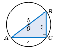
Figure 2.5.3#
Find the radius $R$ of the circumscribed circle for the triangle \(\triangle ABC\) whose sides are $a=3$, $b=4$, and $c=5$.
Solution: We know that \(\triangle ABC\) is a right triangle. So as we see from Figure 2.5.3, \(\sin\;A = 3/5\). Thus,
Note that since $R =2.5$, the diameter of the circle is $5$, which is the same as $AB$. Thus, \(\overline{AB}\) must be a diameter of the circle, and so the center $O$ of the circle is the midpoint of \(\overline{AB}\).
Corollary 2.6. For any right triangle, the hypotenuse is a diameter of the circumscribed circle, i.e. the center of the circle is the midpoint of the hypotenuse.
For the right triangle in the above example, the circumscribed circle is simple to draw; its center can be found by measuring a distance of $2.5$ units from $A$ along \(\overline{AB}\).
We need a different procedure for acute and obtuse triangles, since for an acute triangle the center of the circumscribed circle will be inside the triangle, and it will be outside for an obtuse triangle. Notice from the proof of Theorem 2.5 that the center $O$ was on the perpendicular bisector of one of the sides (\(\overline{AB}\)). Similar arguments for the other sides would show that $O$ is on the perpendicular bisectors for those sides:
Corollary 2.7. For any triangle, the center of its circumscribed circle is the intersection of the perpendicular bisectors of the sides.
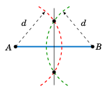
Figure 2.5.4#
Recall from geometry how to create the perpendicular bisector of a line segment: at each endpoint use a compass to draw an arc with the same radius. Pick the radius large enough so that the arcs intersect at two points, as in Figure 2.5.4. The line through those two points is the perpendicular bisector of the line segment. For the circumscribed circle of a triangle, you need the perpendicular bisectors of only two of the sides; their intersection will be the center of the circle.
Example 2.18
Find the radius $R$ of the circumscribed circle for the triangle \(\triangle ABC\) from Example 2.6 in Section 2.2: $a = 2$, $b = 3$, and $c = 4$. Then draw the triangle and the circle.
Solution: In Example 2.6 we found \(A=28.9^\circ\), so \(2\,R = \frac{a}{\sin\;A} = \frac{2}{\sin\;28.9^\circ} = 4.14\), so \(\boxed{R = 2.07}\;\). In Figure 2.5.5 (a) we show how to draw \(\triangle ABC\): use a ruler to draw the longest side \(\overline{AB}\) of length $c=4$, then use a compass to draw arcs of radius $3$ and $2$ centered at $A$ and $B$, respectively. The intersection of the arcs is the vertex $C$.
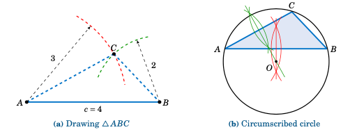
Figure 2.5.5#
In Figure 2.5.5 (b) we show how to draw the circumscribed circle: draw the perpendicular bisectors of \(\overline{AB}\) and \(\overline{AC}\); their intersection is the center $O$ of the circle. Use a compass to draw the circle centered at $O$ which passes through $A$.
Theorem 2.5 can be used to derive another formula for the area of a triangle:
Theorem 2.8. For a triangle \(\triangle ABC\), let $K$ be its area and let $R$ be the radius of its circumscribed circle. Then
(35)#\[K ~=~ \frac{abc}{4\,R} \quad ( \text{and hence }\; R ~=~ \frac{abc}{4\,K} ~) ~.\]
To prove this, note that by Theorem 2.5 we have
Substitute those expressions into formula (25) from Section 2.4 for the area $K$:
Combining Theorem 2.8 with Heron’s formula for the area of a triangle, we get:
Theorem 2.9. For a triangle \(\triangle ABC\), let \(s = \frac{1}{2}(a+b+c)\). Then the radius $R$ of its circumscribed circle is
(36)#\[R ~=~ \frac{abc}{4\,\sqrt{s\,(s-a)\,(s-b)\,(s-c)}} ~~.\]
In addition to a circumscribed circle, every triangle has an inscribed circle, i.e. a circle to which the sides of the triangle are tangent, as in Figure 2.5.6.
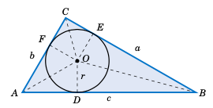
Fiugre 2.5.6 Inscribed circle for \(\triangle ABC\)#
Let $r$ be the radius of the inscribed circle, and let $D$, $E$, and $F$ be the points on \(\overline{AB}\), \(\overline{BC}\), and \(\overline{AC}\), respectively, at which the circle is tangent. Then \(\overline{OD} \perp \overline{AB}\), \(\overline{OE} \perp \overline{BC}\), and \(\overline{OF} \perp \overline{AC}\). Thus, \(\triangle\,OAD\) and \(\triangle\,OAF\) are equivalent triangles, since they are right triangles with the same hypotenuse \(\overline{OA}\) and with corresponding legs \(\overline{OD}\) and \(\overline{OF}\) of the same length $r$. Hence, \(\angle\,OAD =\angle\,OAF\), which means that \(\overline{OA}\) bisects the angle $A$. Similarly, \(\overline{OB}\) bisects $B$ and \(\overline{OC}\) bisects $C$. We have thus shown:
备注
For any triangle, the center of its inscribed circle is the intersection of the bisectors of the angles.
We will use Figure 2.5.6 to find the radius $r$ of the inscribed circle. Since \(\overline{OA}\) bisects $A$, we see that \(\tan\;\frac{1}{2}A = \frac{r}{AD}\), and so \(r = AD \,\cdot\, \tan\;\frac{1}{2}A\). Now, \(\triangle\,OAD\) and \(\triangle\,OAF\) are equivalent triangles, so $AD = AF$. Similarly, $DB = EB$ and $FC = CE$. Thus, if we let \(s=\frac{1}{2}(a+b+c)\), we see that
Hence, \(r = (s-a)\,\tan\;\frac{1}{2}A\). Similar arguments for the angles $B$ and $C$ give us:
Theorem 2.10. For any triangle \(\triangle ABC\), let \(s = \frac{1}{2}(a+b+c)\). Then the radius $r$ of its inscribed circle is
We also see from Figure 2.5.6 that the area of the triangle \(\triangle\,AOB\) is
Similarly, \(\text{Area}(\triangle\,BOC) = \frac{1}{2}\,a\,r\) and \(\text{Area}(\triangle\,AOC) = \frac{1}{2}\,b\,r\). Thus, the area $K$ of \(\triangle ABC\) is
We have thus proved the following theorem:
Theorem 2.11. For any triangle \(\triangle ABC\), let \(s = \frac{1}{2}(a+b+c)\). Then the radius $r$ of its inscribed circle is
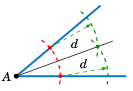
Figure 2.5.7#
Recall from geometry how to bisect an angle: use a compass centered at the vertex to draw an arc that intersects the sides of the angle at two points. At those two points use a compass to draw an arc with the same radius, large enough so that the two arcs intersect at a point, as in Figure 2.5.7. The line through that point and the vertex is the bisector of the angle. For the inscribed circle of a triangle, you need only two angle bisectors; their intersection will be the center of the circle.
Example 2.19
Find the radius $r$ of the inscribed circle for the triangle \(\triangle ABC\) from Example 2.6 in Section 2.2: $a = 2$, $b = 3$, and $c = 4$. Draw the circle.
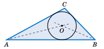
Figure 2.5.8#
Solution: Using Theorem 2.11 with \(s = \frac{1}{2}(a+b+c) = \frac{1}{2}(2+3+4) = \frac{9}{2}\), we have
Figure 2.5.8 shows how to draw the inscribed circle: draw the bisectors of $A$ and $B$, then at their intersection use a compass to draw a circle of radius \(r = \sqrt{5/12} \approx 0.645\).
练习#
Exercises
For Exercises 1-6, find the radii $R$ and $r$ of the circumscribed and inscribed circles, respectively, of the triangle \(\triangle ABC\).
$a = 2$, $b = 4$, $c = 5$
$a = 6$, $b = 8$, $c = 8$
$a = 5$, $b = 7$, \(C = 40^\circ\)
\(A = 170^\circ\), $b = 100$, $c = 300$
$a = 10$, $b = 11$, $c = 20.5$
$a = 5$, $b = 12$, $c = 13$
For Exercises 7 and 8, draw the triangle \(\triangle ABC\) and its circumscribed and inscribed circles accurately, using a ruler and compass (or computer software).
$a = 2$ in, $b = 4$ in, $c = 5$ in
$a = 5$ in, $b = 6$ in, $c = 7$ in
For any triangle \(\triangle ABC\), let $s = frac{1}{2}(a+b+c)$. Show that
\[\tan\;\tfrac{1}{2}A ~=~ \sqrt{\frac{(s-b)\,(s-c)}{s\,(s-a)}} ~~,~~~ \tan\;\tfrac{1}{2}B ~=~ \sqrt{\frac{(s-a)\,(s-c)}{s\,(s-b)}} ~~,~~~ \tan\;\tfrac{1}{2}C ~=~ \sqrt{\frac{(s-a)\,(s-b)}{s\,(s-c)}} ~~.\]Show that for any triangle \(\triangle ABC\), the radius $R$ of its circumscribed circle is
\[R ~=~ \frac{abc}{\sqrt{(a+b+c)\,(b+c-a)\,(a-b+c)\,(a+b-c)}} ~~.\]Show that for any triangle \(\triangle ABC\), the radius $R$ of its circumscribed circle and the radius $r$ of its inscribed circle satisfy the relation
\[rR ~=~ \frac{abc}{2\,(a+b+c)} ~~.\]Let \(\triangle ABC\) be an equilateral triangle whose sides are of length $a$.
Find the exact value of the radius $R$ of the circumscribed circle of \(\triangle ABC\).
Find the exact value of the radius $r$ of the inscribed circle of \(\triangle ABC\).
How much larger is $R$ than $r$?
Show that the circumscribed and inscribed circles of \(\triangle ABC\) have the same center.
Let \(\triangle ABC\) be a right triangle with \(C=90^\circ\). Show that \(\;\tan\;\tfrac{1}{2}A = \sqrt{\frac{c-b}{c+b}}~\).